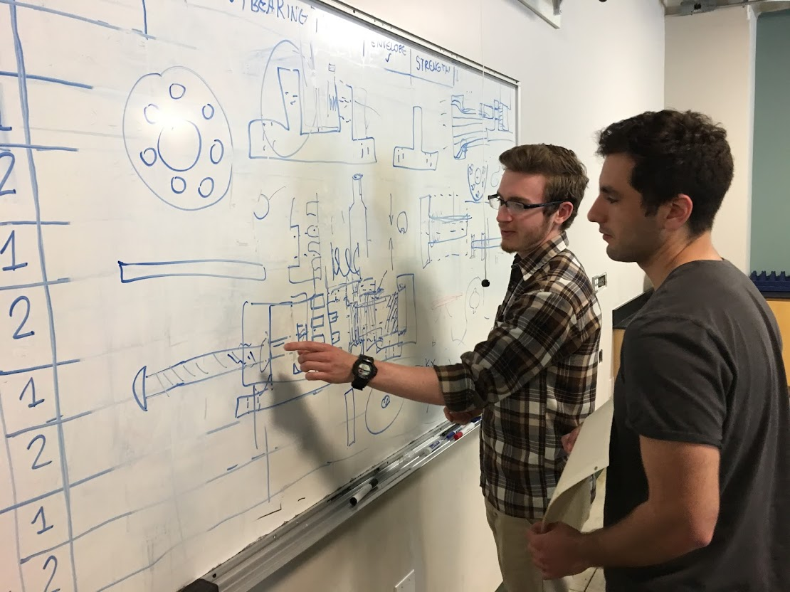

The ALPS Project
The ALPS project, or Amphibious Leg Prosthetic Solution, was originally a senior project with the objective to create a prosthetic leg for triathletes that could transition the ankle between running and swimming positions. The ALPS Reboot Design Team was organized to reduce weight of the assembly, improve buoyancy and drag, and to revise the mechanism to make a more seamless transition between positions.
The team was divided into two sub-groups to better correspond with the interests and abilities of each member. One team was dubbed as the ‘mechanism’ team, tasked with devising the new ankle joint mechanism, and was majorly filled with mechanical engineering students. The second team, the ‘buoyancy/drag’ team, aimed to create a mold for the ankle that would increase the volume and create a similar drag profile to an actual human leg. For the Mechanism team, the next stage involved drafting original design ideas from the conceptualization phase. Through extensive analysis, the errors and assumptions made in the conceptualization came into awareness. Solidworks afforded the team the ability to visualize the errors in their designs: where moments would go, how rotation would be constrained, how springs would provide tensile resistance, and so on. Two and a half weeks were contributed to this process, and the countless hours taken to tolerance and devise manufacturing methods would later be the reason why no mistakes were made in manufacturing: why the entire assembly ended up perfect in the first try.
The third process took all of the remaining four weeks to complete, up until Finals Week. A combined 120 hours of machine shop time was observed between members, along with the required training to obtain yellow tags. The ALPS Reboot Team concludes their project incredibly proud of their progress, and thankful for the opportunity to gain more experience in the process of engineering. Under the constraint of six weeks in the accelerated design project, they were able to conceptualize, design, tolerance, and manufacture a full second prototype. They celebrated their progress at Grover Beach with hot dogs, s’mores, and banana boats, recollecting on all hard work they produced and thankful for the friendships they had assembled. They hope to add the finishing touches to the project in the fall, with only one more week of work to hone down the aesthetics of the leg.
Apr 2017
to
Jun 2017